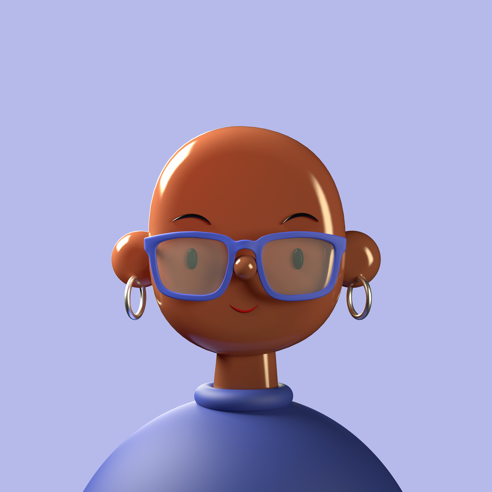

記錄筆數
0 筆
身高
0.0 cm
體重
0.0 kg
BMI
0.0
基礎代謝
0 kcal
骨骼肌
0.0 kg
體脂肪
0.0 kg
體脂率
0.0%
圖表時間範圍
至
體重變化趨勢
BMI數值變化趨勢

John Duck
@johnducky
健康目標追蹤
目標體重
目前：0.0 kg
目標： kg
目標體脂率
目前：0.0%
目標：%
目標肌肉量
目前: 0.0 kg
目標： kg
目標達成率
離目標只差一點，加油！